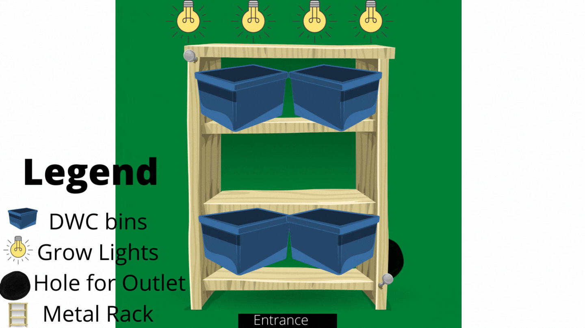

Starting Out
Now my background in construction wasn't too shabby. I'm the daughter of a Plumber, Superintendent, "Mr. Fix It" so I learn from him. Plus I enjoyed building things. Our Sundays spent with Alejandro were fun, engaging yet peaceful. Over the course of three Sundays we learned about construction tools of all sorts, how to measure properly and even how to safely use power tools. Along the way we reinforced garden beds, transplanted squash and corn and was even able to harvest some squash and sage. (The squash was a lovely addition to my spaghetti and I made a smudge stick with the sage.)
Creating the System Design
When it came to creating the design for my system I followed Tikki O's design completely. I was at an advantage due to having a huge grow tent gifted by my best friend so all I actually needed to worry about was the bins (what I what grow the crops out of), what would hold the bins (shelving) and how would I be able to provide oxygen to the nutrient solution water.
The design of the system was simple. At first I was going to be growing out of all four 5 gallon bins but decided to keep it to two bins. I would start the bins on the top of the adjustable metal rack so they can be close to the grow light but would removing shelving as the crops grew. I would create circular holes on the lid of the bins which would the net cups filled with Leca and the plants. Lastly, I would make a small hole (just about the same size of the tubing to avoid anything getting in or out) of the side of the bins in order to feed tubing through so I can place an air stone at the bottom to oxygenate the water.
Material Gworls/Constructing My System Design
Linked above is all the materials for this system design.(Instead of ordering the grow tent and light separate I included in the material list the link for it to be bought together.) Instead of buying a seed started kit, I used an old Chinese takeout container to start my seedlings in. I also used the extra bins that came with my order to be used solely for mixing the nutrient solutions.
Constructing my system was fairly easy and only took about 2 hours. This buildout is beginner friendly! The only power tool I need for this system was a drill in order to make small holes on the side of the bins and make the circular cuts on the lid. Below is the complete buildout.
Conclusion
As we wait for my seedlings to develop true leaves the system remains untouched. When thinking about maintaining this system, my concern comes from the quality of bins that hold the crop and also the consumption of power. Between the grow light and air pump continously running, that can be hard on the electricity bill. Plastic is durable but not long lasting so having extra bins will be extremely useful. I can't call this the most sustainable system but I was able to repurpose some items.